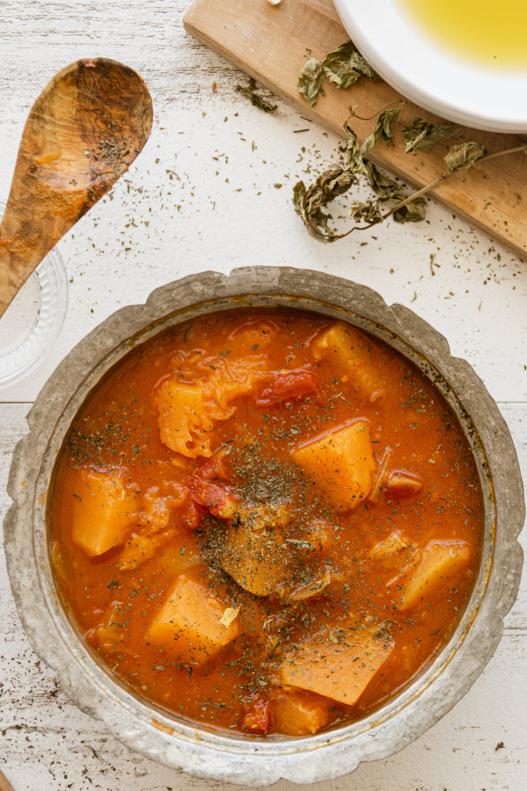

Goulash

If you think Hungary and think hearty food, then Goulash is probably exactly what comes to mind.
Unsurprising given it is Hungary’s greatest food export!Is it a stew? Is it a soup? It sort of
lies between the two in terms of the amount of broth vs the stuff in it. Though one noticeable
thing about traditional Goulash is that the broth is thinner than what you think of with stews,
and it’s not thickened with flour or cream. Also, it’s not typically served over mash like stews,
it’s served in bowls like soup.
Ingredients
- Paprika
- Caraway seeds
- Beef stock/broth
- Beef chuck
- Salt & Pepper
- Butter
- Bay leaf
- Potato
- Garlic & Onion
- Parsley & Carrot
- Tomatoes
Steps
- Cut beef into nice size chunks then sprinkle with salt and pepper.
- Cook onion first for 6 minutes until the edges are light golden.
- Cook beef – Next, add the beef all in one go and stir until the surfaces changes from red to brown.
You won’t be browning on the beef because there’s too much in the pot and that’s just how it’s supposed
to be. All the flavours meld and come together in the next steps!
- Add garlic, capsicum and tomato. Stir for 3 minutes to coat the vegetables in all the flavour in the pot.
The tomato will mostly breakdown – it will break down completing during the slow cooking phase and thicken the sauce.
- Spices – Add paprika, caraway and bay leaf. Stir for 30 seconds to coat everything in the tasty flavours.
- Simmer – Add beef stock, stir, bring to simmer.
- Slow cook – Cover with a lid and transfer to the oven for 1 1/2 hours. At this stage the beef should be
pretty tender but not quite “fall-apart”, there’s still another 30 minutes to go. Stir in carrot and potatoes
then cook for another 30 minutes. By this time, the potatoes (if you cut them the exact size I specify!!)
should be soft and the beef should be “fall-apart”.
- Serve – Sprinkle with parsley if you’re feeling fancy then ladle into bowls!